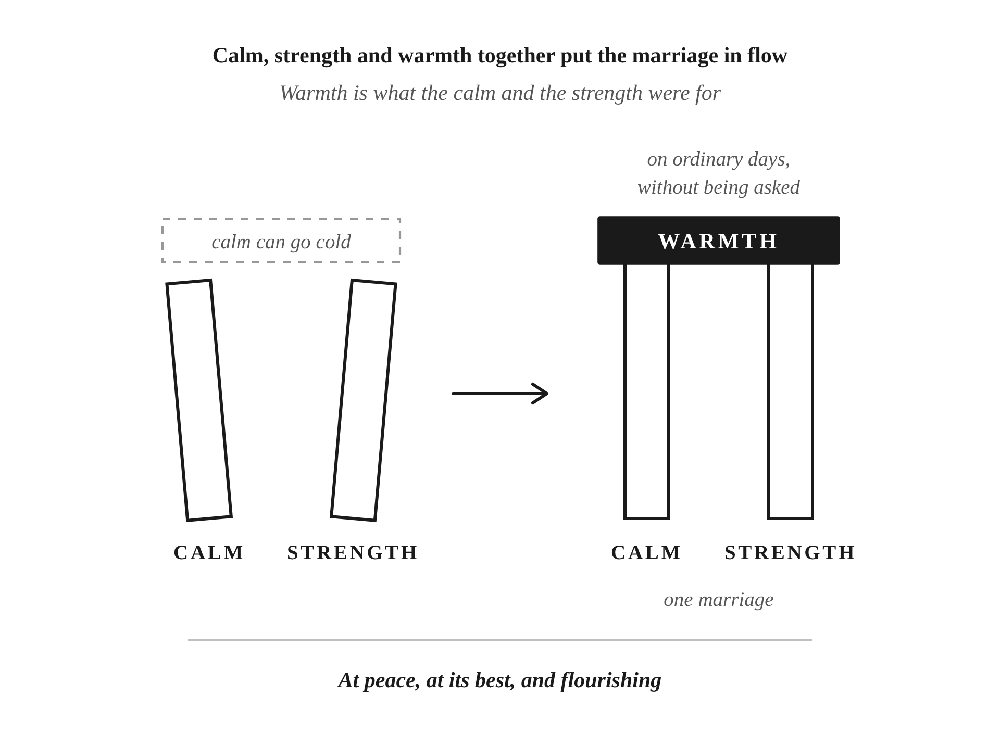

You may know the stretch I mean, even if it’s been a while. Nothing between you needs managing. Nobody is bracing for the next thing, and nobody is waiting for the other one to slip. You and your wife are in the same room because you both want to be there, and it’s easy.
That ease is what everything so far has been working toward.
Part I was the River: staying calm when things change. That calm keeps a hard week from turning into a fight with your wife. Part II was the Oak: the strength to carry weight, so she can lean on you when life gets heavy. The warmth you bring her is what the calm and the strength were for.
The calm and the strength can feel like the hard part, and they are. But if you have both and still keep your warmth from her, you’ve done the work and she misses the best of it. Your attention and your joy are what she actually gets to live with every day.
A lot of us grew up with a different idea of what a man is. Men were fearless protectors and providers. You can respect that, and I do. The trouble was that it left a man nowhere to put what he felt. A lot of men I’ve known said nothing about their feelings and only spoke up to make a demand. If a man was pushed to the edge, the old picture said it was okay for him to blow up.
Calm was my first fix for that, and calm can go cold. I told you in Chapter 1 how I’d go calm and quiet and wait for her upset to pass. What I didn’t tell you is that early on, I once said the quiet part out loud.
I’d just gotten into Stoicism. We had an argument. She was angry, and I sat there quiet. When she was done, I said, “I can’t control you. I can only control me and I don’t see things the way you do.”
She answered right away.
“If I have a man who doesn’t care how I feel, if I have a man who believes that he’s in a relationship by himself, then he will find himself in a relationship by himself.”
She didn’t want to be married to a stone.
Saying “I can’t control you” carried a smug superiority, as if staying calm made me better than her. “I can only control me” is true. In that argument, I used it to opt out of what she was feeling. It should be a mindset, not something that you repeat out loud to her. As a mindset, it’s a standard I hold my own conduct to.
At the start of this book I wrote that the river without the sun becomes detached, that his calm comes from no longer being invested. That was me.
What fixed it was turning toward her.
Compassion is where warmth starts. Chapter 2 called it care without contagion: you feel for her without taking on her mood. Then you go to her. You sit down next to her and ask what’s going on.
I think compassion is a much stronger word than it sounds. It means you want her out of the upset and the worry. You want her in her highest state, at her best, and you put your effort into helping her get there. My wife craves connection, and I crave connection with her. Compassion is how you reach her.
Reaching her is usually small. You’ve seen what it looks like in the last four chapters: effort in her language, attention when you’re together, noticing what you already have, kindness when she’s sharp. All it takes is caring how she’s doing.
The way I read the Stoics, nothing is good in itself except virtue, which means the quality of your own character. The things outside it that you hope for, the Stoics call preferred indifferents. Her happiness is one of those things. It doesn’t decide who I am, and I still want it more than almost anything. I want my wife happy.
I’d like to conduct myself in a way that makes our marriage stronger, my wife happier, and helps us get towards eudaimonia. Eudaimonia is the Greek word for a life that’s going well as a whole. It’s often translated as flourishing.
As I see it, a relationship is an investment, not a burden. She wants to know the time you give her is time you’re glad to give.
I teach my boys that every kind of relationship, not just marriage, is one you build over a long period of time. I tell them it’s true with their teachers, with their coaches, with their girlfriends. It’s true for you, too, and most of all with your wife.
The Roman Stoic teacher Musonius Rufus described marriage as one shared life. I picture that life as a house the two of you own and live in every day. At the start of this book, I said a house can be structurally sound and still feel cold. The calm and the strength make it sound. The warmth makes it a home.
Even a warm one takes damage. Some of it is wear and tear from just living there. Some of it is just age. Some comes from the parties you throw and the guests who don’t take care of it. That’s what happens when people actually live there.
Your marriage takes those costs too. Some years one of your jobs has to come first. Someone’s health takes a turn. The kids need more than either of you planned on. You each come from a family, and both sides need time and patience. None of that is anyone’s fault, and every one of them takes something out of the marriage.
That’s why you keep investing in it. You don’t wait until something is broken. You put in all along, including the weeks when nothing seems wrong.
Some of it is small. I say good morning to her when I’m traveling. I make the coffee. I rub her back. I pick up a gift while I’m out because I thought of her. Yours will be different from mine. You know what she’d notice. What makes it matter is that you did it on an ordinary day, without being asked.
Small acts of service are only part of it. The other part is showing up where she knows you’re with her. Remembering the dates that matter to her is one of them. Many men find anniversaries and special days hard to remember. Chapter 12 said the date matters less than the thought behind it. The thought starts with knowing it’s coming. So have a system. Write them down, in your phone or on a calendar, somewhere you’ll see them in time. If you haven’t done that, you haven’t really thought about your investing strategy.
She wants to know she’s a priority to you, and that you’re in this with her. She doesn’t want to ride along as a passenger in your life. She doesn’t want a marriage where you’re just two people sharing an address.
She looks after the place too, in her own ways. When she feels your attention, it’s easier for her to give hers. When you feel hers, it’s easier for you. Two people who keep putting in make it lighter for each other to keep going.
You still go first. You put in whether or not she has much to give that week. The marriage is yours too, and looking after it is your job as much as hers. My grandfather told me: “Put your wife first.”
So ask yourself about the life you share. Is it better now than it was a year ago?
When all of this is working, the whole marriage feels different. There’s a word for this you may have heard at work: flow. In Part I it belonged to the River. Here it belongs to the two of you.
The psychologist Mihaly Csikszentmihalyi described flow in his 1990 book Flow: The Psychology of Optimal Experience. He wrote about being absorbed in something that stretches you without overwhelming you. You stop watching yourself, and the doing becomes its own reward.
My sense of the word is simpler. To me, flow is when everything is going well: you’re at peace, and you’re at your best. Applying that to a whole marriage is my idea, not his. So is pairing it with three words, two of them Greek terms the Stoics used. To me, they describe what flow looks like for the two of you.
The first word is equanimity, which Chapter 1 described as staying calm and steady on the inside. For one person, equanimity means you’re at peace. Your marriage can be at peace too, with two steady people in it. Then a hard day can be hard without becoming a fight.
The second word is new to this book, but you’ve used the idea since Chapter 1. There’s a best version of you, and a best version of your marriage. Each is the version you’d be proud of. The Greek word for excellence is arête. It’s the word behind the question Chapter 1 asked: was I being the best husband I could be? The four things you checked there, being logical, kind, self-controlled and brave enough to stay engaged, are its parts. For the Stoics, arête was excellence of character, the virtue I mentioned earlier, and it starts with the man. Arête, for a marriage, is the marriage at its best.
The third is eudaimonia, the flourishing from earlier: a life going well as a whole, over years, with both of you in it.
Each word comes from one part of the work. The calm you learned in Part I is what lets a marriage stay at peace. Everything you checked in Chapter 1, the strength from Part II included, is what puts it at its best. The warmth in this part is what makes it a life she’s glad to share with you. When you’re calm and strong and loving at once, the calm, the strength and the warmth stop being separate jobs.
All three words are about the marriage. Being happy as an individual is very different from being happy in a relationship. Your marriage is its own living thing, with its own health, separate from you. A lot of people get confused on that. They look at the marriage as an extension of themselves, and it isn’t one.
I heard a line once that I’ve always loved. The biggest problem in any relationship is that it has another person in it. That person is different from you, and you can’t control them. It makes me laugh every time, because it’s true. It’s also why the marriage needs its own care. There are two of you in it, so what’s good for you alone won’t keep it healthy. You make it a priority, and you take care of it. Your peace counts, and so does hers.
A marriage is one home the two of you build and keep up together. Keep it at peace, at its best, and flourishing, and it moves into flow.
When your marriage is in flow, the place you share is warm and in order. Most of what that looks like is ordinary. I feel deep joy and deep love for my wife. There’s nothing I want to do more than to just hang out with her. I love walking the block with her. I love going to the movies with her. On a regular weekday, that’s the whole plan. She’s my best friend.
I want my wife to be loved. I want her to feel desired. I want her to feel like a priority. That’s what the warmth is for. Your wife should feel all of that from you, on the days nothing special is happening.
You have a lot of people in your life who need you to show up for them. Your kids, your parents, your siblings and the people you work with all count on you, and so does your wife. Every one of those relationships matters, and you should be generous with all of them.
Put the most into your marriage, because she is your number one.

Putting into Practice
Mechanism: Calm and strength make the marriage sound; warmth makes it a home
The idea in one sentence: Your marriage is a home the two of you own, and life wears on it in ways that are nobody’s fault, so you keep investing in it, with small warm things and by showing up where she knows you’re with her; when you’re calm, strong and warm at once, it’s at peace, at its best, and flourishing.
Warmth is what the calm and the strength were for. Calm alone can go cold. “I can only control me” is true, but it’s a mindset, a standard you hold your own conduct to, not something you say out loud to your wife. Warmth starts with compassion. You don’t take on her emotions. You go to her, and you want her at her best. A relationship is an investment, not a burden. Think of your marriage as a house the two of you own. Calm and strength make it sound, and warmth makes it a home. Every house takes damage: wear and tear from living in it, age, parties, inconsiderate guests. A marriage takes costs too, and they’re nobody’s fault: a job that has to come first, each other’s families, health, the kids. That’s why you keep investing in it. Some of that is small: good morning when you’re away, the coffee, rubbing her back, a gift because you thought of her. Some of it is showing up where she knows you’re with her, like remembering the dates that matter to her. Many men find those hard to remember, so have a system and write them down. If you haven’t, you haven’t thought about your investing strategy. She wants to know she’s a priority, not a passenger, and that you two aren’t just people sharing an address. She looks after the place too, and you still go first. Your marriage is its own living thing, with its own health, separate from you, so you make it a priority and take care of it. When you’re calm, strong and warm at once, the marriage is at peace, at its best, and flourishing. I describe those with three words. The first is equanimity. The other two are Greek words the Stoics used: arête, which means excellence, and eudaimonia, a life going well as a whole. That’s what flow looks like for a marriage, and when it’s in flow, the place you share is warm and in order.
Lesson: Life takes a toll on every marriage, through nobody’s fault, so you keep investing in it, in the small things and in showing up where she knows she’s your priority.
Challenge: Today, put the dates that matter to her in your phone or on a calendar, and before the day is over, do one small thing for her without being asked.